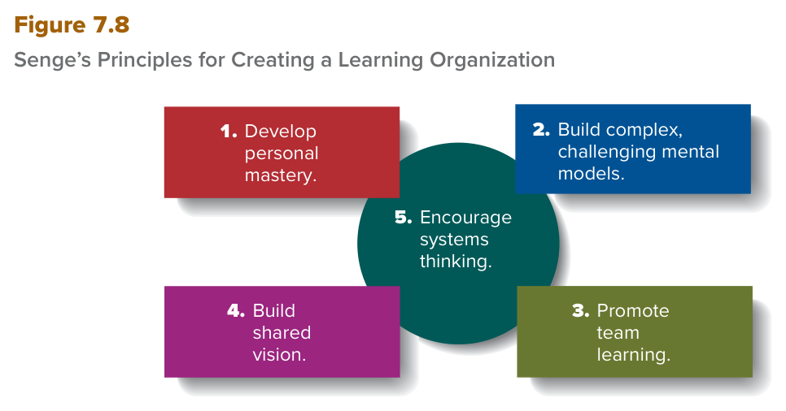

MGT 102 · Chapter 7 · Section 4 of 4:
Organizational Learning, Creativity, and Entrepreneurship
Objective LO7-4: Explain the role that organizational learning and creativity play in helping managers to improve their decisions.
Objective LO7-5: Describe how managers can encourage and promote entrepreneurship to create a learning organization.
In the three lessons before this one you learned what a decision is, how it is made step by step, and why it goes
wrong when you decide alone or with a group. This lesson answers the last question of the chapter: how does a manager
raise the quality of his decisions over the long term? The book's answer has two parts:
organizational learning and creativity at the level of the individual and at the level of the
group (LO7-4), and encouraging entrepreneurship inside the company (intrapreneurship) so the
company becomes a learning organization (LO7-5).
This section is full of lists that earn marks: 5 principles from Senge (and the fifth sits in the middle of Figure 7.8), 3 techniques for group creativity (brainstorming, the nominal group technique, and the Delphi technique), and 3 ways to encourage intrapreneurship (product champions, skunkworks, and rewards for innovation). Focus from now on four traps that trip up students: (1) organizational learning (a process) against learning organization (an organization), (2) the difference between the three techniques (talking face-to-face, writing then a meeting, or writing with no meeting), (3) entrepreneur against intrapreneur, (4) product champion (one person) against skunkworks (an isolated group). And take the English definitions word for word from the EXAM BOX.
Remember from lesson 1 that the hardest decisions are nonprogrammed decisions. The book asks: how can a manager increase his ability to make these decisions so he can adapt to his task environment, modify it, and even drastically alter it, so he can keep raising organizational performance continually? The answer: by encouraging organizational learning.
| Term | The book's definition | What it means |
|---|---|---|
| Organizational learning التعلّم التنظيمي |
The process through which managers seek to improve employees' desire and ability to understand and manage the organization and its task environment. | a process in which the manager tries to improve employees' desire and ability to understand and manage the organization and its task environment. The main text adds: so employees make decisions that continuously raise organizational effectiveness. |
| Learning organization المنظمة المتعلّمة |
An organization in which managers try to maximize the ability of individuals and groups to think and behave creatively and thus maximize the potential for organizational learning to take place. | an organization where managers try to maximize the ability of individuals and groups to think and behave creatively, and so they maximize the chance that organizational learning happens. (The main text says do everything possible to maximize — the same meaning.) |
| Creativity الإبداع |
A decision maker's ability to discover original and novel ideas that lead to feasible alternative courses of action. | an ability of the decision maker to discover ideas that are original and novel and that lead to feasible alternatives. |
| Organizational learning | Learning organization | Creativity | |
|---|---|---|---|
| What is it? | a process | an organization | an ability |
| Who does it? | the manager improves the desire and ability of employees | the manager maximizes the ability of individuals and groups | the decision maker himself |
| Key words | desire and ability · understand and manage | maximize · think and behave creatively | original and novel · feasible |
The quality of managerial decision making ultimately depends on innovative responses to opportunities and threats. How can managers increase their ability to make nonprogrammed decisions that will allow them to adapt to, modify, and even drastically alter their task environments so they can continually increase organizational performance? The answer is by encouraging organizational learning.
Organizational learning is the process through which managers seek to improve employees' desire and ability to understand and manage the organization and its task environment so employees can make decisions that continuously increase organizational effectiveness. A learning organization is one in which managers do everything possible to maximize the ability of individuals and groups to think and behave creatively and thus maximize the potential for organizational learning to take place. At the heart of organizational learning is creativity, which is the ability of a decision maker to discover original and novel ideas that lead to feasible alternative courses of action.
| # | The principle | What the book says | Key words |
|---|---|---|---|
| 1 | Develop personal mastery طوّر التمكّن الشخصي |
For organizational learning to happen, top managers must let every person in the organization develop a sense of personal mastery = a process in which a person develops a desire for personal learning that lasts their whole life. The manager must understand this process and empower each employee to experiment, create, and explore their own ideas — and this has a positive effect on the whole organization. | desire for personal learning · empower · experiment, create, and explore |
| 2 | Build complex, challenging mental models ابنِ نماذج ذهنية معقّدة ومتحدّية |
As part of personal mastery, people think about their assumptions about how the world works — these are called mental models. The problem: people are often unaware of their mental models and must look within (look inside themselves). Once they understand how they see the world, they can expand their thinking personally and at work. Complex mental models = sophisticated ways of thinking that challenge them to find new or better ways to do a task. Expanding thinking like this needs 3 things: experimentation, taking risks, and thinking outside the lines — and this can reshape how the organization performs at all levels. | assumptions · unaware · look within · sophisticated ways of thinking |
| 3 | Promote team learning عزّز تعلّم الفريق |
The manager does everything he can to promote creativity inside groups: team members learn together by exchanging ideas, listening to one another, and working together to solve problems, and ongoing dialog is very important. Senge thought that team learning is more important than individual learning as a way to increase organizational learning, because most important decisions are made inside subunits such as groups, functions, and divisions. | exchanging ideas · listening · ongoing dialog · more important than individual learning |
| 4 | Build shared vision ابنِ رؤية مشتركة |
The manager stresses the importance of building a shared vision = employees share their vision for the future of the organization. Once it is clear, members frame problems and opportunities with it in mind and work together toward common goals that correspond to the vision. | employees share their vision for the future · common goals |
| 5 | Encourage systems thinking شجّع التفكير النُظُمي |
A concept taken from systems theory in Chapter 2. It is a way of seeing the whole picture: a framework for seeing interrelationships and patterns instead of static “snapshots”. It is the conceptual cornerstone that pulls together the other four principles. | whole picture · interrelationships and patterns · conceptual cornerstone |
| Term | The margin definition (memorize it word for word) | What it means |
|---|---|---|
| Personal mastery | Process by which individuals develop a desire for personal learning that may continue indefinitely in the person's daily life, including work activities. | a process in which a person develops a desire for personal learning that may go on indefinitely in his daily life — work included. |
A note on the class booklet: the booklet writes principle 2 as “Build complex mental models”, defines mental models as The assumptions and ways of thinking that shape how people understand the world and their work, and defines systems thinking as A way of seeing the whole picture through interrelationships and patterns rather than static snapshots — the same ideas as the book in other words. The name of the principle in the figure is Build complex, challenging mental models. And remember from lesson 2: Senge himself appeared in the generate alternatives step when he said we are all trapped inside our own mental models.

This is Figure 7.8 in the book (p. 202). It has four colored rectangles in the corners and a circle in the middle. How to read it: start at the top left and go clockwise: 1 top left (red) Develop personal mastery → 2 top right (blue) Build complex, challenging mental models → 3 bottom right (green) Promote team learning → 4 bottom left (purple) Build shared vision. The dark teal circle in the middle = 5 Encourage systems thinking, and it overlaps all four. Where the circle sits is the message itself: systems thinking is the conceptual cornerstone that holds the rest. Notice that number 5 is in the middle, not at the end, so do not think it is “less important” because it has the last number. What they ask: “which principle is in the middle / pulls the others together?” = systems thinking; and “which is NOT one of Senge's principles”, where the usual trap changes one word: promote individual learning (the right word is team), build individual vision (right: shared), or simple mental models (right: complex, challenging).
More and more, managers are being called on to promote organizational learning worldwide. The book's main example:
| Walmart in Malaysia | What happened |
|---|---|
| The idea | Walmart's managers use the lessons from its failures and successes in one country to promote learning across all the countries where it works. |
| The assumption | When it entered Malaysia, it was convinced that customers would respond to its one-stop shopping format (everything in one place). |
| The reality | Malaysians enjoy the social experience of shopping in a lively market or bazaar, so they did not like the impersonal efficiency of the typical Walmart store. |
| The lesson | The importance of designing store layouts that appeal to the customers of each country. |
| The bottom line | Global organizational learning is essential for companies like Walmart that have big operations in multiple countries. |
Learning theorist Peter Senge identified five principles for creating a learning organization (see Figure 7.8):
For organizational learning to occur, top managers must allow every person in the organization to develop a sense of personal mastery, which is the process by which an individual develops the desire for personal learning that will continue throughout the person's life.
Developing complex mental models—sophisticated ways of thinking that challenge them to find new or better ways of performing a task—can help workers and managers to expand the way an organization thinks about how they perform work.
Senge thought that team learning is more important than individual learning as a way to increase organizational learning. He pointed out that most important decisions are made within organization subunits such as groups, functions, and divisions.
Managers must emphasize the importance of building a shared vision—meaning that employees share their vision for the future of the organization.
Managers must encourage systems thinking (a concept drawn from systems theory discussed earlier in Chapter 2). This concept is a way of seeing the whole picture. It is a framework for seeing interrelationships and patterns rather than static “snapshots” within an organization. Systems thinking can be thought of as a conceptual cornerstone that pulls together the other four principles for creating a learning organization.
Building a learning organization requires that managers change their management assumptions radically. Developing a learning organization is neither a quick nor an easy process.
Increasingly, managers are being called on to promote global organizational learning. Clearly, global organizational learning is essential for companies such as Walmart that have significant operations in multiple countries.
| # | The condition | What the book says |
|---|---|---|
| 1 | Opportunity and freedom | People must be given the opportunity and freedom to generate new ideas. |
| 2 | Do not rush, do not watch | Creativity declines when managers look over the shoulders of talented employees and try to “hurry up” a creative solution. The book asks you: how would you feel if your boss said you had one week to come up with a new product idea to beat the competition? |
| 3 | Experiment, risk, mistakes | Creativity results when the employee has a chance to experiment, to take risks, and to make mistakes and learn from them. |
| 4 | No fear | The employee must not fear that he will be looked down on or penalized for ideas that at first seem outlandish — because sometimes exactly those ideas give truly innovative products and services. The book's examples of companies well known for the freedom to experiment: Stripe, Microsoft, and SpaceX. |
| 5 | Constructive feedback | After managers generate alternatives, creativity can be fostered by giving them constructive feedback so they know how well they are doing. Ideas that seem to be going nowhere are eliminated and the creative energy goes in another direction; ideas that seem promising are promoted, and help from other managers is found. |
| 6 | Stress + visible reward | Top managers stress the importance of looking for alternative solutions and should visibly reward people who come up with creative ideas. Why? Because being creative is demanding and stressful, and people who believe they work on important, vital issues are motivated to put in the high effort. And creative people like to receive the acclaim of others, so innovative organizations have many ceremonies and rewards to recognize them. |
| 7 | Frontline employees | Frontline employees are often in a good position to come up with ideas for improvements, but they may be reluctant to speak up. So some managers use various types of rewards — and the reward signals that coming up with ideas and sharing them is important. |
The class booklet sums it up like this: freedom to experiment, chances to develop skills, and support for new ideas; and employees offer ideas more when reasonable failures become a chance to learn and good ideas are recognized.
Research suggests that when certain conditions are met, managers are more likely to be creative. People must be given the opportunity and freedom to generate new ideas. Creativity declines when managers look over the shoulders of talented employees and try to “hurry up” a creative solution.
Creativity results when employees have an opportunity to experiment, to take risks, and to make mistakes and learn from them. And employees must not fear that they will be looked down on or penalized for ideas that might at first seem outlandish; sometimes those ideas yield truly innovative products and services.
Once managers have generated alternatives, creativity can be fostered by giving them constructive feedback so they know how well they are doing.
Top managers must stress the importance of looking for alternative solutions and should visibly reward employees who come up with creative ideas. Being creative can be demanding and stressful.
The definition (from the main text): a group problem-solving technique in which managers meet face-to-face to generate and debate a wide variety of alternatives from which to make a decision — managers meet face-to-face to generate and debate a wide variety of alternatives, and the decision comes out of them.
Usually 5 to 15 managers meet in a closed-door session and work like this (5 steps):
When is it useful? In some situations — the book's example: when managers are looking for a name for a new perfume or a new car model. But: sometimes individuals working alone produce more alternatives! The main reason for the lost productivity in brainstorming is production blocking.
| Term | The margin definition (memorize it word for word) | What it means + why it happens |
|---|---|---|
| Production blocking تعطّل الإنتاج / انسداد الأفكار |
A loss of productivity in brainstorming sessions due to the unstructured nature of brainstorming. | lost productivity in brainstorming sessions because they are unstructured. It happens because members cannot simultaneously: (1) make sense of all the alternatives being generated, (2) think up more alternatives, (3) remember what they were thinking. |
| Term | The margin definition (memorize it word for word) | What it means |
|---|---|---|
| Nominal group technique تقنية المجموعة الاسمية |
A decision-making technique in which group members write down ideas and solutions, read their suggestions to the whole group, and discuss and then rank the alternatives. | members write their ideas → read them to the whole group → discuss → then rank the alternatives. |
A small group of managers in a closed-door session, and 4 steps:
| Term | The margin definition (memorize it word for word) | What it means |
|---|---|---|
| Delphi technique تقنية دلفي |
A decision-making technique in which group members do not meet face-to-face but respond in writing to questions posed by the group leader. | members do not meet face-to-face; they answer in writing to questions that the group leader poses. |
The problem it solves: brainstorming and the nominal group technique both need a meeting. So what if the managers are in different cities or different parts of the world? First solution: videoconferencing brings distant managers together to brainstorm. Second solution: Delphi = a written approach to creative problem solving. 4 steps:
The class booklet defines Delphi as A written approach to creative problem solving in which questionnaires, summarized responses, and revisions are exchanged until a consensus is reached, and the nominal group as A structured method in which members generate alternatives individually in writing, share them with the group, discuss them, and rank them individually — the same idea, but the margin definition above is the one in the book.
| Brainstorming | Nominal group technique | Delphi technique | |
|---|---|---|---|
| Meet face-to-face? | yes | yes (a small group) | no |
| The start | ideas by talking, freely | individual writing, 30–40 minutes | a written questionnaire from the leader |
| How many | 5–15 managers | a small group | managers and the most knowledgeable departmental experts |
| Criticism | not allowed until all alternatives are heard | not allowed until all alternatives are read | a team of top managers summarizes and sends more questions |
| The end | a short list of the best alternatives | each member ranks → the highest is chosen | repeated until consensus |
| When? | a name for a perfume or a car model | a controversial issue + to avoid production blocking | managers are scattered and cannot meet |
A photo caption in the book: brainstorming is one example of a group problem-solving technique that promotes creative ideas and innovative solutions inside the organization.
To encourage creativity at the group level, organizations can use group problem-solving techniques that promote creative ideas and innovative solutions. These techniques can also prevent groupthink and help managers uncover biases. Here we look at three group decision-making techniques: brainstorming, the nominal group technique, and the Delphi technique.
Brainstorming is a group problem-solving technique in which managers meet face-to-face to generate and debate a wide variety of alternatives from which to make a decision.
The main reason for the loss of productivity in brainstorming appears to be production blocking, which occurs because group members cannot always simultaneously make sense of all the alternatives being generated, think up additional alternatives, and remember what they were thinking.
To avoid production blocking, the nominal group technique is often used. It provides a more structured way of generating alternatives in writing and gives each manager more time and opportunity to come up with potential solutions.
What happens if managers are in different cities or in different parts of the world and cannot meet face-to-face? Videoconferencing is one way to bring distant managers together to brainstorm. Another way is to use the Delphi technique, which is a written approach to creative problem solving.
The book says: the importance of a learning environment within
established organizations cannot be understated (in other words: it is very, very
important). Sometimes managers and members develop a sense of entrepreneurship inside the company that
encourages learning and creativity. So intrapreneurship is the road to a learning organization — and that
is exactly the wording of LO7-5.
| Term | In English (the book's sentence) | What it means |
|---|---|---|
| Entrepreneurship ريادة الأعمال |
In a broad sense, entrepreneurship is the process of identifying opportunities to provide customers with new or improved goods and services. | the process of identifying opportunities to give customers goods and services that are new or improved. |
| Intrapreneurship الريادة الداخلية |
In a corporate setting, this process is called intrapreneurship. | exactly the same process, but inside a company (a corporate setting). |
| Intrapreneurs روّاد الأعمال الداخليين |
Individuals who embrace the spirit of entrepreneurship in a corporate setting are known as intrapreneurs, or corporate entrepreneurs. | individuals who embrace the spirit of entrepreneurship inside a company — and their second name is corporate entrepreneurs. |
| Entrepreneur رائد الأعمال |
A person who identifies opportunities and decides how to mobilize the resources needed to produce new or improved goods and services. | a person who identifies opportunities and decides how to mobilize the resources needed to produce new or improved goods and services. Note: this definition is from the class booklet — our book (12th edition) defines only the process in this chapter, and uses “outside entrepreneurs” for people working outside the company. |
| Entrepreneur (outside) | Intrapreneur (inside) | |
|---|---|---|
| What does he do? | both do the same thing: identify opportunities for new or improved goods and services | |
| Where? | independent — starts his own business (the book sends you to Chapter 19) | inside an established company (corporate setting) |
| Second name | outside entrepreneur | corporate entrepreneur |
| The difficulty | — | uses his creativity inside a structure and culture that are already in place — no easy feat (not an easy thing) |
Social entrepreneur? This term is not in our edition and not in the class booklet. If it shows up in a question from another source, do not spend your time on it; focus on the book's own terms.
The importance of a learning environment within established organizations cannot be understated. In some instances, managers and other members develop a sense of entrepreneurship within the company that encourages learning and creativity. In a broad sense, entrepreneurship is the process of identifying opportunities to provide customers with new or improved goods and services. In a corporate setting, this process is called intrapreneurship, and, individuals who embrace the spirit of entrepreneurship in a corporate setting are known as intrapreneurs, or corporate entrepreneurs.
The intensity of competition today, particularly from agile, small companies, has made it increasingly important for large, established organizations to promote and encourage intrapreneurship to raise their level of innovation and organizational learning. The higher the level of intrapreneurship, the higher will be the level of learning and innovation.
| Term | The margin definition (memorize it word for word) | What it means |
|---|---|---|
| Product champion بطل / متبنّي المنتج |
A manager who takes “ownership” of a project and provides the leadership and vision that take a product from the idea stage to the final customer. | a manager (one person) who takes “ownership” of the project and gives the leadership and vision that take the product from the idea stage to the final customer. |
The 3M example (3M is well known for its attempts to promote intrapreneurship) — it encourages all its managers to become product champions and come up with new product ideas. The path:
Audrey Sherman from 3M: she holds the most patents of any female scientist in the company — 151 patents, and she ranks sixth among all 3M employees. Her advice for successful intrapreneurship (4):
The idea behind the product champion role: an employee who feels ownership of a project tends to act like an outside entrepreneur and works very hard to make the project succeed. Using skunkworks and new venture divisions makes this feeling of ownership even stronger.
| Term | The definition (memorize it word for word) | What it means |
|---|---|---|
| Skunkworks فريق ابتكار معزول |
A group of intrapreneurs who are deliberately separated from the normal operation of an organization to encourage them to devote all their attention to developing new products. | a group of intrapreneurs who are deliberately separated from the normal operation of the organization (for example, from the normal chain of command) so they can devote all their attention to developing new products. |
| New venture division قسم المشاريع الجديدة |
A unit created to support the development of new products or ventures within an established organization. | a unit created to support developing new products or ventures inside an established organization. (This definition is from the class booklet — the book only gives the name.) And the book sends you to Chapter 8: the “disruptive growth” team at General Mills, the division that also works as the company's venture capital arm. |
To encourage managers to bear the uncertainty and risk that come with the hard work of entrepreneurship, it is necessary to link performance to rewards. More and more, companies reward intrapreneurs based on the outcome of the product development process.
| # | The kind of reward | The book's example |
|---|---|---|
| 1 | Large bonuses if the project succeeds | — |
| 2 | Stock options that can make them millionaires if the product sells well | Microsoft and Google made hundreds of their employees multimillionaires through the stock options in their reward packages. |
| 3 | Promotion to the ranks of top management | Most of 3M's top managers reached the executive jobs because they had a track record of successful intrapreneurship. |
The important warning: the organization must reward intrapreneurs equitably, or they will leave and become outside entrepreneurs who might start a competitive new venture. And Chapter 19 discusses strategies to retain corporate entrepreneurs.
| Product champion | Skunkworks | Rewards for innovation | |
|---|---|---|---|
| Who / what? | one manager | a group of intrapreneurs | a reward system |
| Key words | ownership · idea stage to the final customer | deliberately separated · chain of command | link performance to rewards · equitably |
| The example | 3M (business plan → product development committee) | Lockheed U2 · Ford Team Edison | Microsoft and Google (stock) · 3M (promotion) |
One way to promote intrapreneurship is to encourage someone to assume the role of product champion, a manager who takes “ownership” of a project and provides the leadership and vision that take a product from the idea stage to the final customer.
The idea behind the product champion role is that employees who feel ownership for a project are inclined to act as outside entrepreneurs and go to great lengths to make the project succeed. Using skunkworks and new venture divisions can also strengthen this feeling of ownership.
A skunkworks is a group of intrapreneurs who are deliberately separated from the normal operation of an organization—for example, from the normal chain of command—to encourage them to devote all their attention to developing new products.
To encourage managers to bear the uncertainty and risk associated with the hard work of entrepreneurship, it is necessary to link performance to rewards. Organizations must reward intrapreneurs equitably if they wish to prevent them from leaving and becoming outside entrepreneurs who might form a competitive new venture.
The questions are in English because the exam is in English. Answer first, then open the solution. If you miss question 1, go back to Figure 7.8 in the second concept; if you miss question 2, go back to the “three side by side” table in the fourth concept.
C. Principle 3 in the figure is Promote team learning (the green rectangle, bottom right), and Senge says clearly that team learning is more important than individual learning, because the most important decisions are made in subunits. The trap: the choice changed just one word. A is principle 1 (top left), B is principle 2 (top right — watch the words complex, challenging), and D is principle 4 (bottom left). The fifth, which is not in the choices, is Encourage systems thinking in the circle in the middle.
B. The words that give it away: individual writing for 30 or 40 minutes → reading in turns → discussing one by one → each member ranks, and it is the technique used to avoid production blocking. The trap in A: brainstorming is also face-to-face with no criticism at first, but it starts by talking, not by writing, and it is the technique that suffers from production blocking. C is a trap too: Delphi also uses writing, but the members never meet face-to-face, and the question says a closed-door session. And D is from lesson 3: it critiques a preferred alternative; it does not generate ideas.
A. The first words of the definition, The process, + employees' desire and ability … the organization and its task environment = organizational learning. The trap in B: a learning organization is the organization itself, where managers maximize the ability of individuals and groups to think and behave creatively — not a process. C: creativity is an ability of the decision maker to discover original and novel ideas. And D is the most dangerous trap: personal mastery is also a “process” and has the word desire, but it is the desire of one person for his own learning, not a manager improving employees' understanding of the organization and its environment.
C. A group of intrapreneurs who are deliberately separated from the normal operation of an organization so they can focus on new products = a skunkworks, and Team Edison is the book's recent example by name. The trap in A: a product champion is one manager who takes ownership of a project, and the question is about an isolated group. B is a trap from the 3M example: a committee of senior managers that decides the funding after it checks the business plan. And D: a nominal group is a technique for generating alternatives in a meeting, not a product development team.
B. Individuals who embrace the spirit of entrepreneurship in a corporate setting are known as intrapreneurs, or corporate entrepreneurs — and the key words are “inside an established bank”. The trap in A: the process itself (identifying an opportunity for a new service) is what an entrepreneur does too, but an outside entrepreneur works outside the company and starts his own business — the only difference is the place. C: a skunkworks is an isolated group, and Sara is one person. And D: a learning organization is an organization, not a person.
| Term | What it means | Watch out for |
|---|---|---|
| Organizational learning | The process in which managers improve employees' desire and ability to understand and manage the organization and its task environment | a process; desire and ability |
| Learning organization | An organization where managers maximize the ability of individuals and groups to think and behave creatively | an organization; maximize … think and behave creatively |
| Creativity | A decision maker's ability to discover original and novel ideas that lead to feasible alternatives | an ability; original and novel → feasible; “at the heart” of organizational learning |
| Senge's five principles | Five principles for creating a learning organization (Figure 7.8) | 5; the fifth, systems thinking, is in the center of the figure |
| Personal mastery | A person's desire for personal learning that lasts his whole life | the individual; the manager empowers him to experiment, create, explore |
| Mental models (complex, challenging) | Assumptions about how the world works; complex ones = sophisticated ways of thinking | people are often unaware of them; expanding them = experimentation · taking risks · thinking outside the lines |
| Team learning | Members learn together by exchanging ideas, listening, and solving problems together | more important than individual learning for Senge; decisions are made in groups, functions, divisions |
| Shared vision | Employees share their vision for the future of the organization | the employees share it → common goals |
| Systems thinking | A way of seeing the whole picture: interrelationships and patterns | not static snapshots; the conceptual cornerstone; from systems theory (Chapter 2) |
| Global organizational learning | Using lessons from one country to learn across all countries | Walmart in Malaysia: one-stop shopping did not work → store layouts for each country |
| Brainstorming | Managers meet face-to-face to generate and debate many alternatives | face-to-face, 5–15 managers, no criticism until all alternatives are heard → short list |
| Piggyback | Building on each other's suggestions | a brainstorming rule, with “Anything goes” |
| Production blocking | Lost productivity in brainstorming because it is unstructured | the problem of brainstorming; the nominal group avoids it |
| Nominal group technique | Members write ideas, read them to the group, discuss, then rank | write down → read → discuss → rank; 30 or 40 minutes; for controversial issues |
| Delphi technique | Members do not meet face-to-face; they answer the leader's questions in writing | no meeting; written; repeated until consensus |
| Videoconferencing | A video meeting that brings distant managers together | used to brainstorm at a distance — it is not Delphi |
| Entrepreneurship | The process of identifying opportunities to give customers new or improved goods and services | a process; new or improved |
| Entrepreneur | (Booklet definition) A person who identifies opportunities and decides how to mobilize the resources | outside entrepreneur = outside the company |
| Intrapreneurship | The same process in a corporate setting | inside an established company |
| Intrapreneurs / corporate entrepreneurs | Individuals who embrace the spirit of entrepreneurship in a corporate setting | higher intrapreneurship → higher learning and innovation |
| Product champion | A manager who takes ownership of a project from the idea stage to the final customer | one manager; the 3M example |
| Product development committee | 3M's senior managers who probe the business plan | they decide the funding — they are not the product champion |
| Skunkworks | A group of intrapreneurs deliberately separated from the normal operation | a group; shorter time and higher quality; from Lockheed U2; Ford Team Edison |
| New venture division | (Booklet definition) A unit that supports new products or ventures in an established organization | strengthens ownership like skunkworks; General Mills (Chapter 8) |
| Rewards for innovation | Linking performance to rewards for intrapreneurs | bonuses · stock options · promotion; must be equitable |
| Stock options | A right to own company shares, which can make employees rich | Microsoft and Google made hundreds of employees multimillionaires |
| Social entrepreneur | (no definition in our sources) | not in our edition or the booklet |
| Figure 7.8 — Senge's Principles for Creating a Learning Organization | The five principles: four in the corners and one in the middle | 1 top left → 4 bottom left (clockwise) + 5 in the middle circle |
These are the general English words on this page, not the management terms. Learn them and the textbook gets much easier to read.
| Word | Part of speech | العربية | Example sentence from this lesson |
|---|---|---|---|
| acclaim | noun | إعجاب وتقدير الناسيعني الناس يمدحونك ويصفّقون لك على شغلك | Creative people like to receive the acclaim of others. |
| agile | adjective | رشيق / سريع الحركةيعني خفيف وسريع، يتحرّك ويتغيّر بسرعة بدون تعقيد | The intensity of competition today, particularly from agile, small companies, has made it increasingly important for large, established organizations to promote and encourage intrapreneurship. |
| coin | verb | يصيغ (كلمة جديدة) / يبتكر مصطلحيعني أول واحد يطلّع الكلمة ويبدأ الناس يستخدمونها | The term skunkworks was coined at the Lockheed Corporation. |
| consensus | noun | إجماع / اتفاق عاميعني الكل يتفقون على رأي واحد في الآخر | The process is repeated until a consensus is reached and the most suitable course of action is clear. |
| controversial | adjective | خلافي / مثير للجدليعني موضوع الناس مختلفين عليه وكل واحد له رأي | The nominal group technique is especially useful when an issue is controversial. |
| cornerstone | noun | حجر الزاوية / الأساسيعني الحجر الأساسي اللي يمسك البناء كله، لو شلته طاح | Systems thinking can be thought of as a conceptual cornerstone that pulls together the other four principles for creating a learning organization. |
| correspond | verb | يتوافق مع / يطابقيعني يمشي مع الشي ويناسبه | Members work together toward common goals that correspond to the vision. |
| deliberately | adverb | عمداً / عن قصديعني تسويه وأنت قاصد، مو بالغلط | A skunkworks is a group of intrapreneurs who are deliberately separated from the normal operation of an organization. |
| drastically | adverb | بشكل جذري / كبير جداًيعني تغيير قوي وكبير، مو شوي | How can managers increase their ability to make nonprogrammed decisions that will allow them to adapt to, modify, and even drastically alter their task environments? |
| embrace | verb | يتبنّى / يحتضنيعني تقبل الفكرة من قلب وتمشي عليها | Individuals who embrace the spirit of entrepreneurship in a corporate setting are known as intrapreneurs, or corporate entrepreneurs. |
| empower | verb | يمكّن / يعطي صلاحيةيعني تعطي الشخص القوة والحرية يسوي الشي بنفسه | Managers must understand this process and empower each employee to experiment, create, and explore their own ideas of personal learning. |
| enhance | verb | يحسّن / يرفعيعني تخلّي الشي أحسن وأقوى من قبل | If these people are isolated, development time will be relatively brief and the quality of the final product will be enhanced. |
| equitably | adverb | بإنصاف / بعدليعني كل واحد ياخذ حقه على قد تعبه | Organizations must reward intrapreneurs equitably if they wish to prevent them from leaving and becoming outside entrepreneurs. |
| feasible | adjective | قابل للتطبيق / ممكنيعني شي تقدر تسويه فعلاً على أرض الواقع، مو خيال | Creativity is a decision maker's ability to discover original and novel ideas that lead to feasible alternative courses of action. |
| foster | verb | يعزّز / ينمّييعني تساعد الشي يكبر ويقوى شوي شوي | Once managers have generated alternatives, creativity can be fostered by giving them constructive feedback so they know how well they are doing. |
| impersonal | adjective | بارد / بدون لمسة إنسانيةيعني تعامل رسمي ناشف، ما فيه علاقة ولا ونس | Malaysians enjoy the social experience of shopping in a lively market or bazaar and thus did not like the impersonal efficiency of the typical Walmart store. |
| indefinitely | adverb | بلا نهاية / لأجل غير محدّديعني يستمر وما له وقت يخلص فيه | Personal mastery is a desire for personal learning that may continue indefinitely in the person's daily life, including work activities. |
| novel | adjective | جديد / مبتكريعني شي جديد ما أحد سواه قبل، مو بمعنى رواية | At the heart of organizational learning is creativity, which is the ability of a decision maker to discover original and novel ideas. |
| outlandish | adjective | غريب جداً / شاذيعني فكرة غريبة لدرجة الناس يضحكون عليها أول مرة | Employees must not fear that they will be looked down on or penalized for ideas that might at first seem outlandish. |
| probe | verb | يفحص بعمق / يتعمّق فييعني تدقّق وتسأل أسئلة كثيرة عشان تكشف كل شي | 3M's product development committee is a team of senior managers who probe the strengths and weaknesses of the plan to decide whether it should be funded. |
| radically | adverb | جذرياً / من الأساسيعني تغيّر الشي من جذوره، مو تعديل بسيط | Building a learning organization requires that managers change their management assumptions radically. |
| reluctant | adjective | متردّد / مو متحمّسيعني ما تبي تسوي الشي وتتردّد فيه | Employees on the front line are often in a good position to come up with creative ideas for improvements but may be reluctant to speak up or share their ideas. |
| simultaneously | adverb | في نفس الوقتيعني تسوي أكثر من شي بنفس اللحظة | Group members cannot always simultaneously make sense of all the alternatives being generated, think up additional alternatives, and remember what they were thinking. |
| sophisticated | adjective | متطوّر / متقدّميعني شي ذكي وفيه تفاصيل كثيرة، مو بسيط | Complex mental models are sophisticated ways of thinking that challenge people to find new or better ways of performing a task. |
| speculation | noun | تخمين / تكهّناتيعني الناس يحاولون يخمّنون وش السالفة بدون ما يعرفون أكيد | The secrecy with which this unit functioned and speculation about its goals led others to refer to it as “the skunkworks.” |
| withhold | verb | يمتنع عن / يأجّل (حكمه)يعني تأجّل حكمك على الفكرة وما تعلّق عليها لين تسمع كل الأفكار | Everyone withholds judgment until all alternatives have been heard. |
Built from the text of the textbook Contemporary Management 12e (Jones & George, McGraw Hill) —
Chapter 7: Decision Making, Learning, Creativity, and Entrepreneurship, sections Organizational Learning and
Creativity (with Creating a Learning Organization, Promoting Individual Creativity, and Promoting Group
Creativity) and Entrepreneurship and Creativity (with Intrapreneurs and Organizational Learning), objectives
LO7-4 and LO7-5 (pages 201–207), with the book's Summary and Review, checked against the
terms in the class booklet.
Summarized only: the Managing Globally box (Western Union Continues to Learn, pages
203–204) is given with its main numbers, and the three photo captions in one line each. The definitions of
entrepreneur and new venture division come from the class booklet because the book gives the names without a
definition, and social entrepreneur is not in this edition. The Management in Action exercises at the end of
the chapter (including the Small Group Breakout Exercise: Brainstorming) are not part of this lesson.